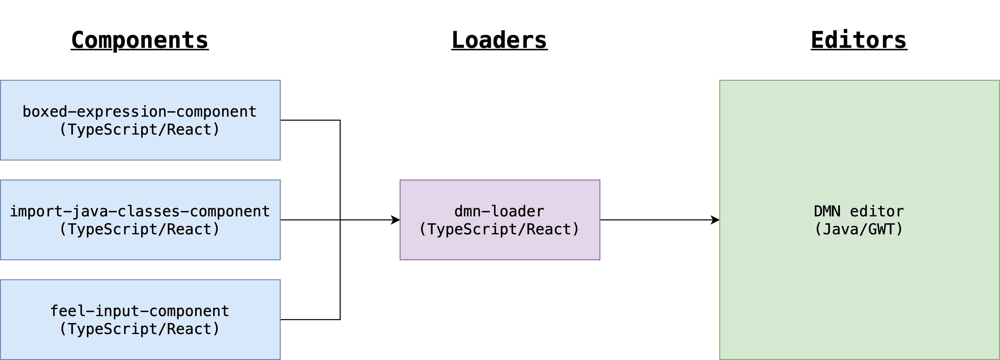
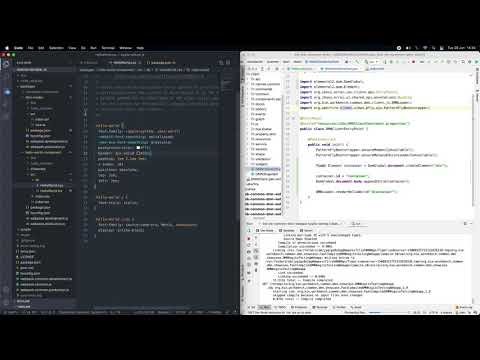

DMN editor – Contributors Guide – Part 2
If you’re reading this, probably you’ve already thought about contributing to an open-source project. However, projects generally have some learning curve, which may intimidate newcomers.
We do not want that feeling for the DMN editor! So, this is the second of a series of posts that will quickly empower you to contribute to the DMN editor and other Kogito components.
Are you excited too? So, this guide is for you! 😃 Today, we’re going to walk through our TypeScript/React components. You’ll learn how to create a new one and modify an existing feature.
Overview
Currently, the DMN and the BPMN editors are Java/GWT-based. However, we’re writing new features based on our new stack powered by TypeScript and React. Check how we’re embedding new components into the editors:

As we can see in the diagram above, we may have many Components based on React or any other framework. They are entirely uncoupled from the host application (DMN editor) and may be re-used anywhere.
Each Editor (DMN or BPMN) has its Loader, which is responsible for grouping all components and teaching how the host application must render each one. Loaders may also include features like compressing, lazy loading, and versioning.
Creating your React component
Okay! But, how can you create those blue boxes? In other words, how can you create new components? Is it difficult?
No! You can rely on the yarn new-component command (in the kogito-editors-js module). It auto-generates all required boilerplates to build a new component, which is not too much, but we created this command to encourage valuable conventions (like component showcases).
Check this complete tutorial: How to create a Kogito editor React component. It has all the steps, from creating the component to embedding it in the GWT editor.
Now you can create your component by relying on its showcase. So, you don’t need to run the whole editor test, develop, and validate it (if you want to know more about how showcases work, check this post written by Valentino 😉).
Testing your component in the editor
At this point, your component is probably running into the DMN editor (if it’s not, you may follow the tutorial above).
Still, sometimes we need to connect the dots, integrate everything and see your component in action on GWT by running it in the development mode.
For this kind of scenario, you need to wire both worlds. Thus, you’ll be able to perform changes in the GWT or React side and see the changes without restarting the DMN editor web app.
Here you may check all steps for wiring your components and the GWT editor: How to Wire a Kogito editor components with a GWT.
Challenge time!
Now you know how React components work in the context of the DMN editor! If you find any problems following the tutorials above, I recorded this video walking through both tutorials:

Would you like to start playing with React and real-world challenges? Currently, we have the KOGITO-4168 and the KOGITO-3627 epics with various ideas. If you’d like to start contributing, please reach out the DMN tooling team in the #tooling team on Zulip! 😊